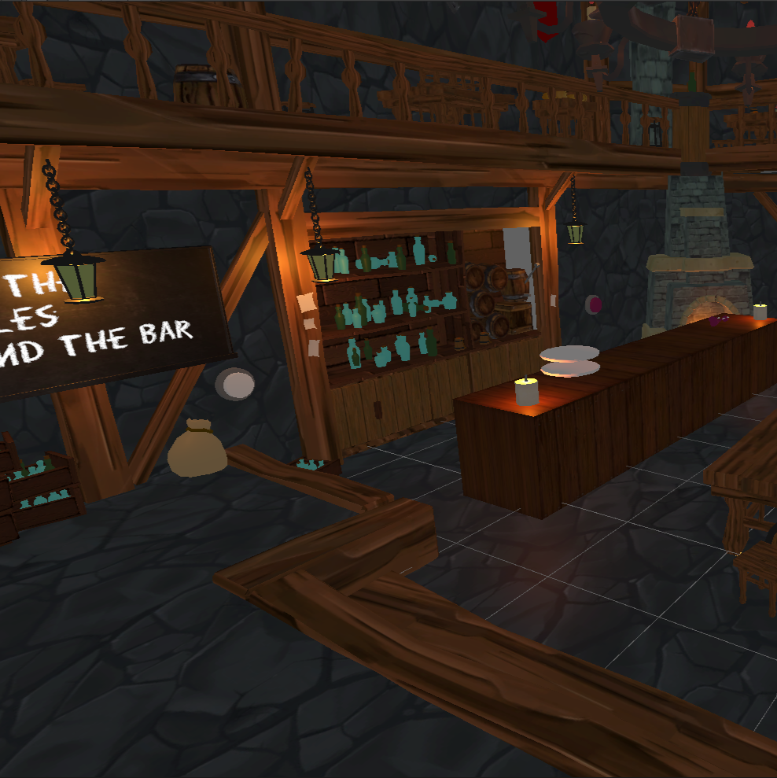

TaVeRn
Skills Used in this Project
Unity, C#, OpenXR, UML Diagrams, Documentation, Version Control

Project Overview
This was a 12 week project where I needed to make a VR game using the OpenXR Open Source ToolKit. This project is set in a medieval pub is a simulator of someone working it. This includes a tasks such as opening the pub, getting AI orders, Cooking Food and lighting Candles.
Documention
This project required full documentation including :
- VR Research Task and Applicable Use Cases
- Pitch Document
- Game Design Document
- Technical Design Document
- Testing Documentation
- Critical Evaluation